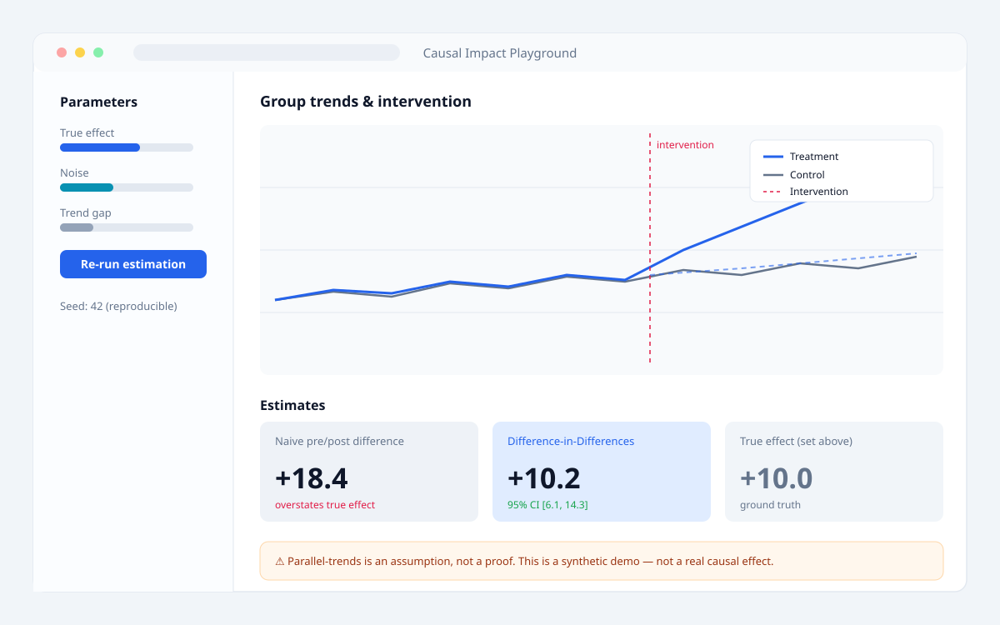
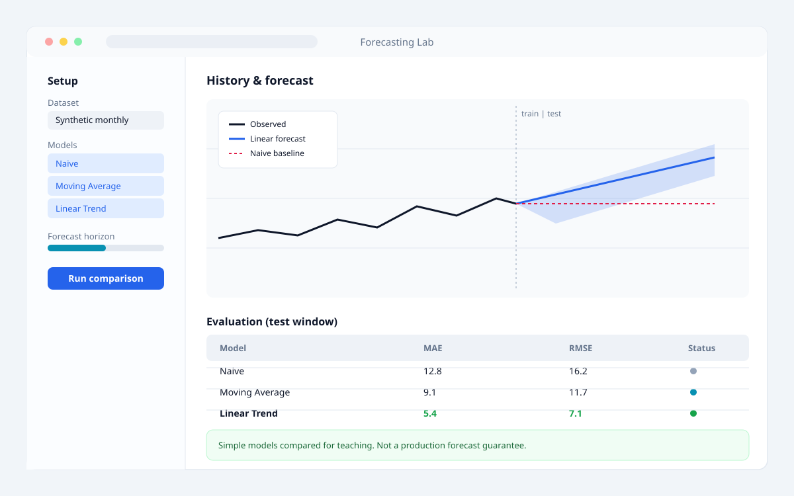
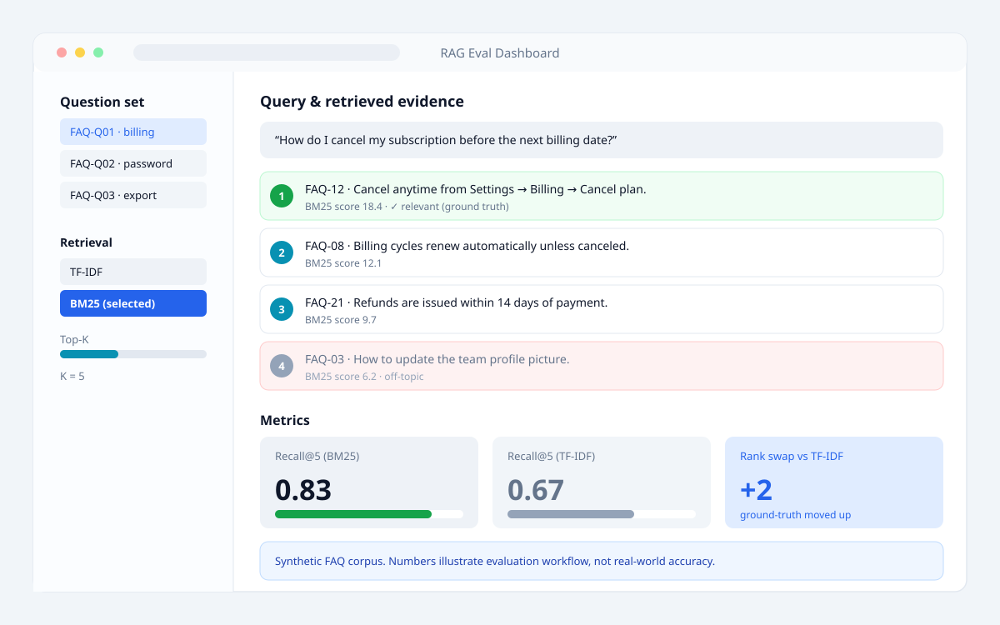

Case 01
Causal Impact Playground
因果推論・実験設計 · Streamlit · 合成データ

Before · Notebook の課題
- 「前後差」と「DID」の差を 1 セルの数値でしか見せられず、パラメータを変えるたびに上から再実行が必要。
- 平行トレンドが崩れるケースを説明するにはセルを複製し、Notebook が長くなるほど追跡が困難に。
- 真の効果と推定値の比較が手作業で、過剰解釈の注意文が埋もれやすい。
- seed を変えるたびに結果が変わり、共有相手が同じ数字を再現できない。
After · アプリ化で改善した点
- スライダーで効果・ノイズ・トレンド差を動かし、推定値が即座に更新される。
- 前後差と DID を並べて表示し、過大評価の方向が一目でわかる。
- 95% 信頼区間と「平行トレンドは仮定であり証明ではない」注意文を常時表示。
- seed を UI に固定し、誰が開いても同じ合成データ・同じ推定値を再現できる。
Case 02
Forecasting Lab
時系列予測・評価 · Streamlit · 公開/合成時系列

Before · Notebook の課題
- モデルごとにセルを分けると結果表が縦に長くなり、MAE/RMSE の横比較が見えにくい。
- 学習期間と評価期間の切り替えがコード編集要因で、期間を変えるたびに再実行の連鎖が発生。
- 予測区間を描くのに都度 Matplotlib を書き直し、残差プロットも別セルで断片化。
- 欠損値を含むデータで落ちるパスがあり、共有先で想定外のエラーが出た。
After · アプリ化で改善した点
- モデルを複数選択すると、1 つの比較表に MAE・RMSE が並ぶ。
- 学習/評価の境界をスライダーで動かし、予測グラフとファンが即更新。
- 残差プロットと予測区間を標準装備し、アルゴリズム差ではなく判断に時間を使える。
- 欠損を含むデータでも空状態メッセージで落ちず、本運用予測を保証しない旨を明示。
Case 03
RAG Eval Dashboard
RAG 評価・検索方式比較 · Streamlit · 合成 FAQ

Before · Notebook の課題
- 検索方式を変えるたびにセルを複製し、結果の diff が目視依存で順位の変化を追いきれない。
- Top-K 根拠とスコアが別セルに散らばり、回答の根拠を行で突き合わせるのが煩雑。
- recall@k などの指標計算が 1 セルに埋まり、評価を見せるよりコードを読ませる状態に。
- 空の質問や未知語で落ち、レビュー時に再現手順を毎回書いていた。
After · アプリ化で改善した点
- 質問と検索方式を切り替えると、ランキングと recall@k が同時に更新される。
- 根拠ドキュメントを Top-K で並べ、正解との一致を色分けして一目で判別。
- TF-IDF と BM25 風スコアの指標を 1 画面に並べ、順位の入れ替わりを定量的に示せる。
- 空入力・未知語でも空状態メッセージで落ちず、合成データである旨を常時明示。
Lessons Learned
3 例を通して繰り返し現れた、Notebook → App の共通教訓。
-
01
比較は並べて、動かして
前後差 vs DID、TF-IDF vs BM25、複数モデル。Notebook では縦に並ぶ比較を、アプリでは横に並べてパラメータを動かすことで判断を速くする。
-
02
前提と制限を常時表示
平行トレンドの仮定、本番予測でないこと、合成データであること。Notebook では埋もれがちな注意文を、アプリでは画面に常駐させる。
-
03
再現性を UI に固定
seed の固定、学習/評価の境界、Top-K。コード編集でしか変えられないものをスライダーにし、共有相手が同じ数字を再現できるようにする。
-
04
空・異常・未知で落とさない
空の質問、未知語、欠損値、極端パラメータ。Notebook では再現手順書が必要だった分岐を、アプリでは空状態メッセージで吸収する。
-
05
UI は薄く、ロジックは分離
Streamlit 画面は src/ の関数を呼ぶだけにし、推定・評価ロジックを pytest で保つ。Notebook の「セル＝状態」を解き、アプリでもテスト可能な形にする。
-
06
公開データだけで成立させる
合成データ・公開時系列のみで技術を示す。会社案件の Notebook は載せず、見せる力と秘密を分けて管理する。